Optimization of a Double Wishbone Suspension System
This demo shows how to use MATLAB, Optimization Toolbox, and Genetic Algorithm and Direct Search Toolbox to optimize the design of a double wishbone suspension system.
Note: You will need to have the following products installed in order to run this demo: MATLAB, Simulink, Optimization Toolbox, Genetic Algorithm and Direct Search Toolbox, and SimMechanics. Optional: Virtual Reality Toolbox.
Contents
- Introduction to the Problem
- Double Wishbone Model
- Input Geometry Definition
- Problem Formulation
- Objective Function
- Constraint Definition
- Solve the Problem Using Optimization Toolbox
- Solve the Problem Using a Different Start Point
- Solve the Problem Using Genetic Algorithm and Direct Search Toolbox
- Summary
Introduction to the Problem
We wish to optimize the response of a double wishbone suspension system. The response we are evaluating is the camber angle vs. travel distance as shown in the figure below. Our current design is shown in green. We want to achieve the profile shown in blue.
Camber angle is the angle of the tire relative to the perpendicular axis to the road. A negative camber angle is beneficial to handling.
Travel distance is the amount of verticle motion of the car as a result of traveling over a bump or pothole in the road.
verifyInstalled % verify products installed wbOptimSetUp % Load in geometry wbPlotFun(idealProfile) % Plot ideal profile wbPlotFun(x,time,'initial') % Simulate and Plot current profile
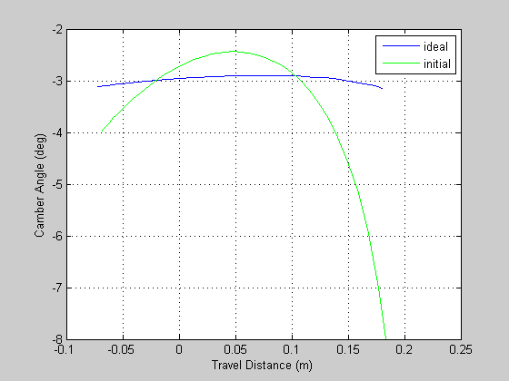
Double Wishbone Model
A model of the double wishbone suspension system was created using Simulink with SimMechanics. We will use this model to simulate the performance of our suspension system.
if license('test','virtual_reality_toolbox') simName = 'DoubleWishboneVR.mdl'; else simName = 'DoubleWishbone.mdl'; end open(simName) sim(simName)
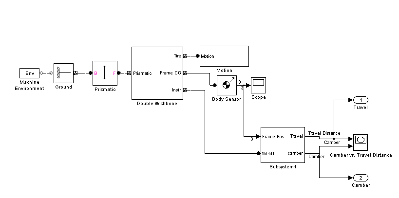
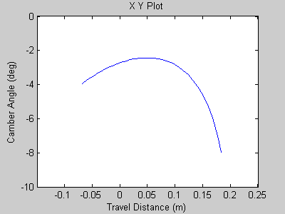
Input Geometry Definition
The wishbone geometry is defined according to diagram below. We have 15 inputs that we specify, denoted as X1 - X15, that determine the double wishbone connection points and rod lengths. These are defined as:
Upper Arm Length X1 = AG Upper Arm Connection Point B (X2, X3, X4) = (xB, yB, zB) Upper Arm Connection Point C (X5, X6, X7) = (xC, yC, zC) Lower Arm Length X8 = DG Upper Arm Connection Point E (X9, X10, X11) = (xE, yE, zE) Upper Arm Connection Point F (X12, X13, X14) = (xF, yF, zF) Connecting Ling Length X15 = AD
All dimensions are input to the model in inches.
x %Current geometric definition figure('Position',[1 700 700*317/545 700]) image(imread('schematic.png','BackgroundColor',[1 1 1])) axis equal, axis tight, axis off
x =
10.8000
14.2000
18.4000
4.0000
13.1000
17.3000
-2.3000
14.3000
9.1000
7.2000
-0.5000
15.1000
8.2000
12.5000
12.5000
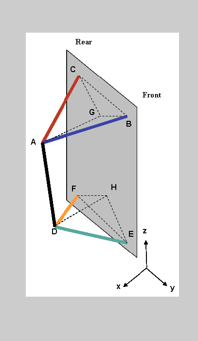
Problem Formulation
Our objective is to minimize the difference between the 'Actual' profile and the 'Ideal' profile by changing the geometry parameters X1 - X15. Our problem is formulated as a constrained minimization problem:
Objective function:
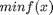
where
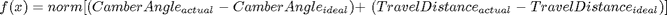
Subject to (constraints):
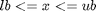
Objective Function
Our objective function is defined to return a single value, which is a measure of how close the 'Actual' profile is to the 'Ideal' profile. Our objective function is defined in the function wbObjFun.
type wbObjFun
function varargout = wbObjFun(x,time,profile)
% Simulate the wishbone model in Simulink and get camber vs. distance
% profile and/or norm of profile
%
% Use:
% F = wbObjFun(x,time,profile) returns norm of profile and sim profile
% [F,P] = wbObjFun(x,time,profile) returns profile in P
if isstruct(x), x = x.x; end
% Run simulation
simopt = simset('SrcWorkspace','Current');
[unused1,unused2,yout]= sim('DoubleWishbone',time,simopt);
% Return norm value]
if isempty(profile)
varargout{1} = NaN;
else
varargout{1} = norm(yout(:,1) - profile(:,1)) + norm(yout(:,2) - profile(:,2));
end
if nargout > 1 % return profile if requested
varargout{2} = yout;
end
Constraint Definition
The constraint specified for the model are (refer to previous figure):
BAC Angle (degrees) 25 <= BAC <= 35 -|
EDF Angle (degrees) 15 <= EDF <= 30 |- A
Point B/C rotation (degrees) BC <= 10 |
Point E/F rotation (degrees) EF <= 5 -|
Upper Arm Length Limits 6 <= X1 <= 16
Point B X-Axis Limits 10 <= X2 <= 16
Point C X-Axis Limits 10 <= X5 <= 16
Lower Arm Length Limits 8 <= X8 <= 18
Point E X-Axis Limits 6 <= X9 <= 14
Point F X-Axis Limits 12 <= X12 <= 20
Ling Length X15 <= 18
|__________|__________|
| |
lb ubCoefficient matrix A and upper and lower bounds are defined in wbOptimSetup.
Solve the Problem Using Optimization Toolbox
The problem can be solved using the fmincon solver in Optimization Toolbox. To use the optimtool GUI to set up an run the problem, load the optimization problem definition in optimtoolProblem.mat, then type optimtool at the command line and once the GUI is open, select File --> Import Problem --> optimtoolProblem. The problem is now defined in the GUI, select Start.
load optimtoolProblem % optimtool % uncomment this line to run interactively in the GUI % % Command line equivalent % ----------------------- % Start with the default options (may want to comment out this section if % running interactively. options = optimset; % Modify options setting % Note: You can use the defaults as well, this will speed up the solution options = optimset(options,'Display' ,'iter'); options = optimset(options,'TolFun' ,0.1); options = optimset(options,'LargeScale' ,'off'); % Request plots, add my custom plot to the mix options = optimset(options,'OutputFcn' ,{ @updatePlot }); options = optimset(options,'PlotFcns' ,{ @optimplotx @optimplotfval }); tic [x_x0] = fmincon(@(x) wbObjFun(x,time,idealProfile),x0,Aineq,bineq,... [],[],lb,ub,[],options); toc x_x0
max Line search Directional First-order
Iter F-count f(x) constraint steplength derivative optimality Procedure
0 16 8.37961 -0.01086
1 39 7.07475 -0.01458 0.00781 221 101
2 60 6.31931 -0.08378 0.0313 13.2 9.91
3 78 4.63623 -0.1544 0.25 -2.12 5.63
4 94 2.82522 -0.006032 1 1.71 6.79
5 110 1.7788 2.22e-016 1 -0.313 13.4
6 126 48.3345 -0.5437 1 99.1 69
7 142 27.5839 -0.4806 1 20.4 14.6
8 158 9.69029 -4.441e-016 1 29.3 15
9 175 9.19751 -0.1622 0.5 24.6 36.5
10 192 7.11708 -0.1193 0.5 11.1 33.3
11 208 2.28753 0 1 8.86 24
12 225 0.326541 0 0.5 1.36 23.9
13 246 0.273352 -4.441e-016 0.0313 0.166 19.6
Optimization terminated: magnitude of directional derivative in search
direction less than 2*options.TolFun and maximum constraint violation
is less than options.TolCon.
Active inequalities (to within options.TolCon = 1e-006):
lower upper ineqlin ineqnonlin
8
Elapsed time is 292.878329 seconds.
x_x0 =
14.8410
12.5973
18.3707
5.6539
12.1541
18.3603
-2.5993
15.0912
11.2407
6.4329
-1.8655
15.5438
7.6907
12.5108
12.5000
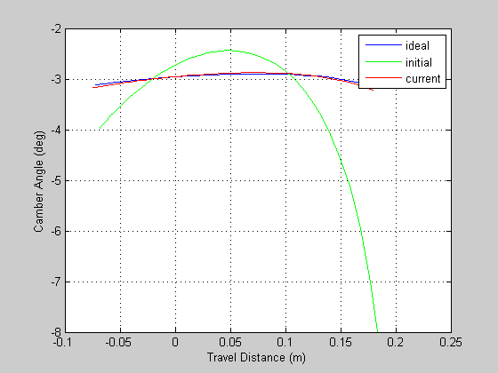
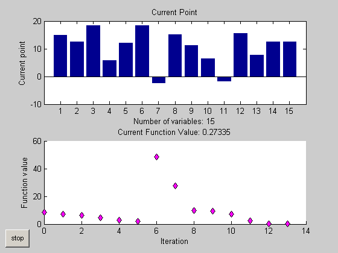
Solve the Problem Using a Different Start Point
At this point, I’d like take a look at our problem from a different angle. As you may know, gradient based solvers, such as the one we used here, tend to fail if the objective function does not have smooth derivatives or the problem is ill-defined. Let's change the start point of this problem, and see if fmincon can find a solution.
load wbPSOpt tic try [x_x0c] = fmincon(@(x) wbObjFun(x,time,idealProfile),x0c,Aineq,bineq,... [],[],lb,ub,[],options); catch disp('We caught the following error') nowork = lasterror; nowork.message end toc
max Line search Directional First-order
Iter F-count f(x) constraint steplength derivative optimality Procedure
0 16 15.4198 1.554e-015
1 33 393.237 -0.3751 0.5 940 109
2 50 275.985 -0.1875 0.5 -234 55.5
3 66 163.538 1.776e-015 1 -632 47.1
We caught the following error
ans =
Error using ==> sim
Error originates in Mechanical block DoubleWishbone/Double Wishbone/Double Wish/shock abs/Spherical1. A constraint has been violated. Check constraint solver type and tolerances in the Machine Environment block and Simulink solver and tolerances in Configuration Parameters. Check for kinematic singularities.
Elapsed time is 78.577761 seconds.
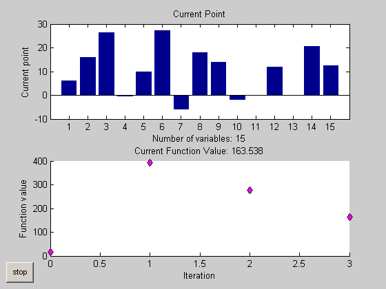
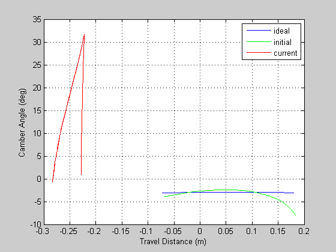
The error message is from our Simulink model and basically tells us we put in a bad definition for geometry that our model could not handle.
Just to be clear, the problem is not with the fmincon solver, but with my knowledge of the design space in which we are looking to explore. fmincon did what I asked it to do, it just found a point that my model could not handle. To use fmincon we need to add constraints to our problem definition or redefine our objective function to prevent this situation from happening.
I’m pointing this out because in practice you may often encounter problems where you just don’t have enough information to completely define your problem or you may have an objective function that does not have well defined gradients, or even holes in the design space. This often renders traditional gradient based solvers, such as the one used here, ineffective. This is where algorithms in Genetic Algorithm and Direct Search Toolbox are useful.
Solve the Problem Using Genetic Algorithm and Direct Search Toolbox
We can use pattern search to solve this problem without having to redefine our objective function, constraints, or the Simulink model. Let's define our problem as before and solve. We loaded in the problem formulation in the structure wbPSOpt in the previous step. Let's see if pattern search can find a solution.
Note: You can set up your problem in the psearchtool GUI analogously to the optimtool GUI. File --> Import Options --> wbPSOpt, set up the problem definition, and then click on Start.
% psearchtool % uncomment this line to run interactively % % Command line equivalent (comment out this section if using psearchtool) % ----------------------- % Start with default options options = psoptimset; % Modify some parameters % Note: You can use the defaults as well, this will speed up the solution options = psoptimset(options,'TolFun' ,0.06); options = psoptimset(options,'MeshContraction' ,0.25); options = psoptimset(options,'MaxMeshSize' ,1 ); options = psoptimset(options,'PollingOrder' ,'success'); options = psoptimset(options,'SearchMethod' ,@GPSPositiveBasisNp1); options = psoptimset(options,'Display' ,'iter'); options = psoptimset(options,'Cache' ,'on'); options = psoptimset(options,'CacheTol' ,2.2204e-010); % Request plots, add my custom plot to the mix options = psoptimset(options,'OutputFcns' ,{ { @updatePlot } }); options = psoptimset(options,'PlotFcns' ,{ @psplotbestf @psplotbestx }); %%Run PATTERNSEARCH tic [x_x0c_ps] = patternsearch(@(x) wbObjFun(x,time,idealProfile),x0c,... Aineq,bineq,[],[],lb,ub,[],options); toc x_x0c_ps
Iter f-count f(x) MeshSize Method
0 1 15.4198 1
1 4 4.73299 1 Successful Search
2 9 4.5874 1 Successful Search
3 10 4.38583 1 Successful Search
4 11 4.06205 1 Successful Search
5 12 3.66635 1 Successful Search
6 18 3.29301 1 Successful Search
7 49 3.29301 0.25 Refine Mesh
8 50 3.12307 0.25 Successful Search
9 61 2.94817 0.25 Successful Search
10 63 2.58323 0.25 Successful Search
11 64 2.38127 0.25 Successful Search
12 69 2.31824 0.25 Successful Search
13 70 2.29935 0.25 Successful Search
14 84 2.20802 0.25 Successful Search
15 86 1.93259 0.25 Successful Search
16 92 1.73249 0.25 Successful Search
17 93 1.56504 0.25 Successful Search
18 94 1.45678 0.25 Successful Search
19 95 1.43817 0.25 Successful Search
20 126 1.43817 0.0625 Refine Mesh
21 137 1.29085 0.0625 Successful Search
22 143 1.26478 0.0625 Successful Search
23 144 1.24756 0.0625 Successful Search
24 145 1.24026 0.0625 Successful Search
25 156 1.19536 0.0625 Successful Search
26 162 1.14688 0.0625 Successful Search
27 163 1.10743 0.0625 Successful Search
28 164 1.07901 0.0625 Successful Search
29 165 1.0635 0.0625 Successful Search
30 166 1.06245 0.0625 Successful Search
Iter f-count f(x) MeshSize Method
31 177 1.02141 0.0625 Successful Search
32 183 0.966209 0.0625 Successful Search
33 184 0.924368 0.0625 Successful Search
34 185 0.899389 0.0625 Successful Search
35 186 0.894236 0.0625 Successful Search
36 203 0.893817 0.0625 Successful Search
37 210 0.880355 0.0625 Successful Search
38 237 0.880355 0.01563 Refine Mesh
Optimization terminated: change in the function value less than options.TolFun.
Elapsed time is 255.561565 seconds.
x_x0c_ps =
12.1238
12.5998
16.7597
9.1324
12.0842
17.0282
-1.6750
14.4139
9.0207
6.0950
-1.6124
14.8704
7.1561
11.2301
11.5000
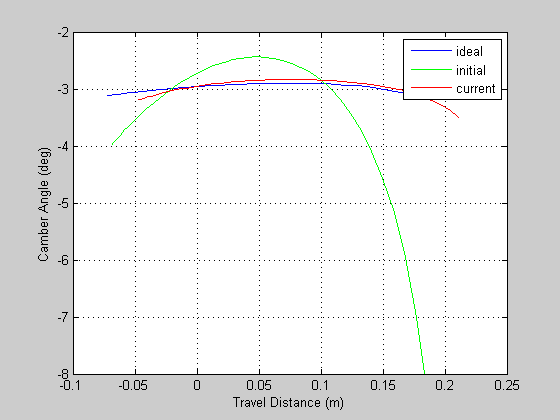
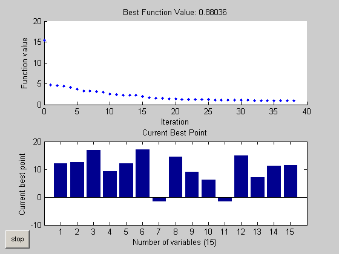
Pattern search found a solution. We set the function tolerance for both fmincon and patternsearch to limit the total number of iterations required to satisfy our convergence criteria. Decreasing this value would allow the solution to converge more tightly on the 'Ideal' profile, but would require longer solution times.
Summary
We used two approaches to optimize the design of a double wishbone suspension system. The first approach illustrated traditional gradient base techniques that work well for well-defined problems. We then found a condition where the gradient based method did not find a solution, since we do not have a completely defined problem and were unlucky in the choice of start point. The second approach, pattern search, was used to illustrate non-gradient based methods that work well for problems that are ill-defined or do not have well define gradients or objective functions.